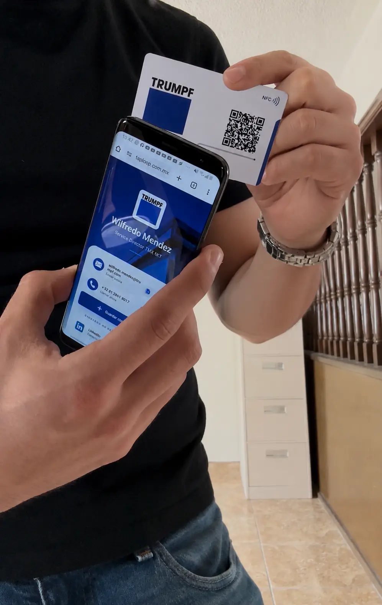
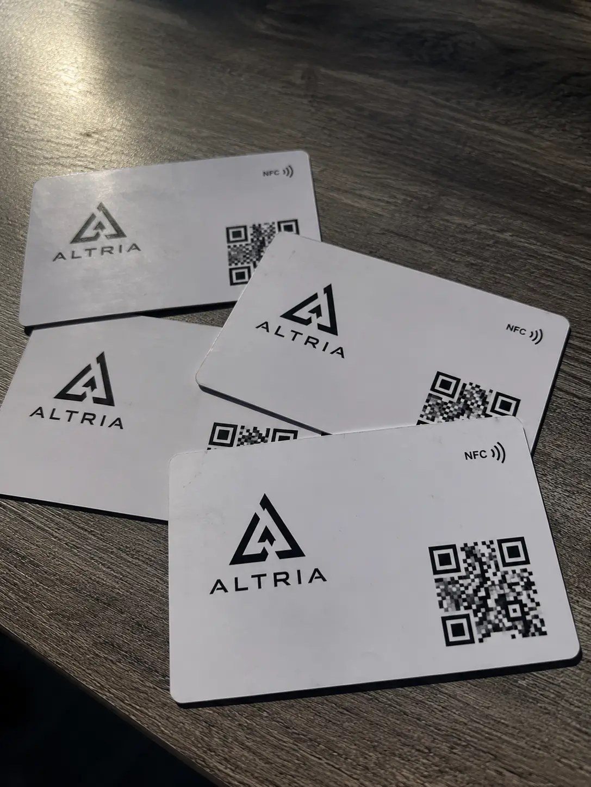
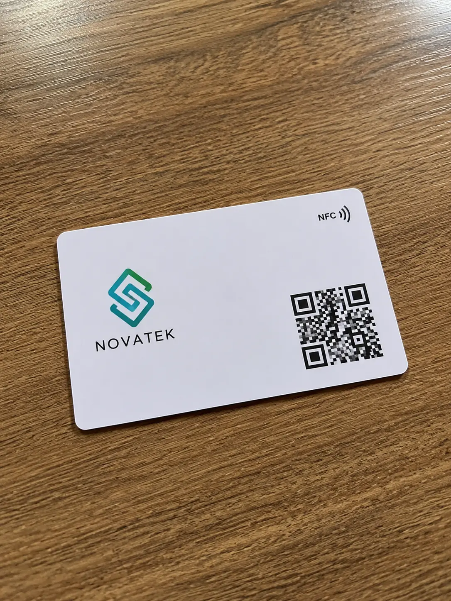
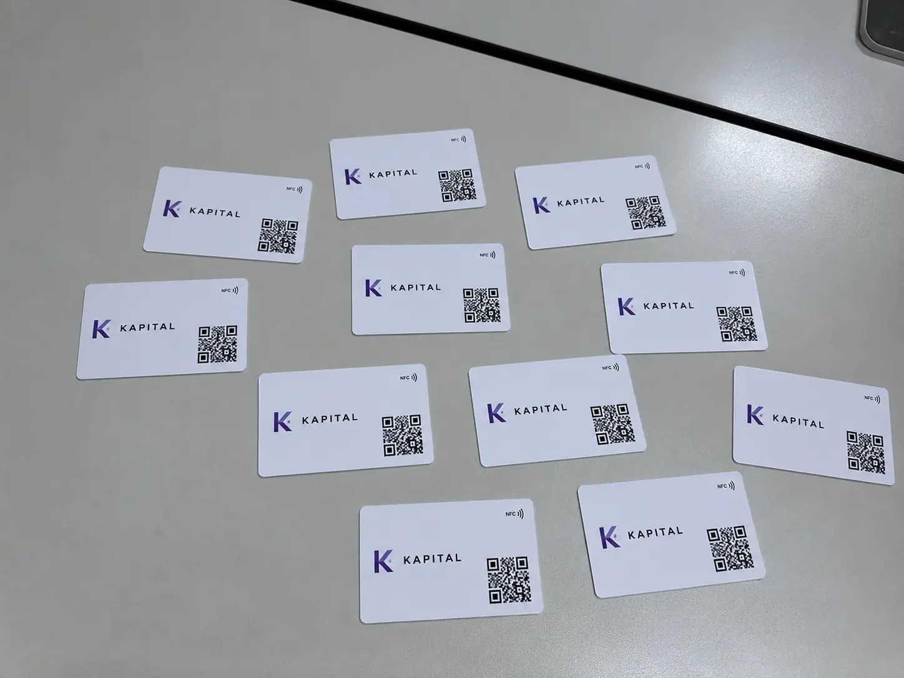
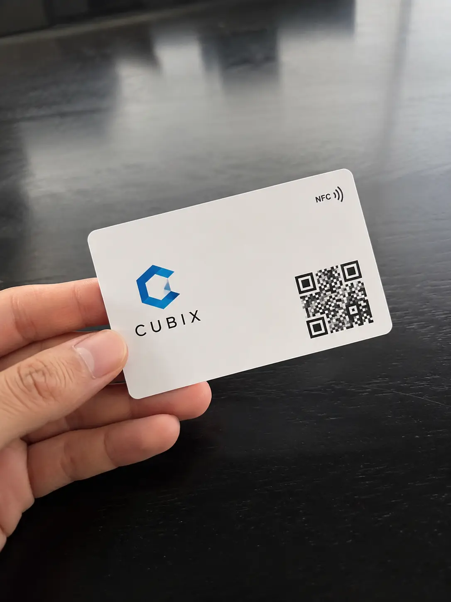
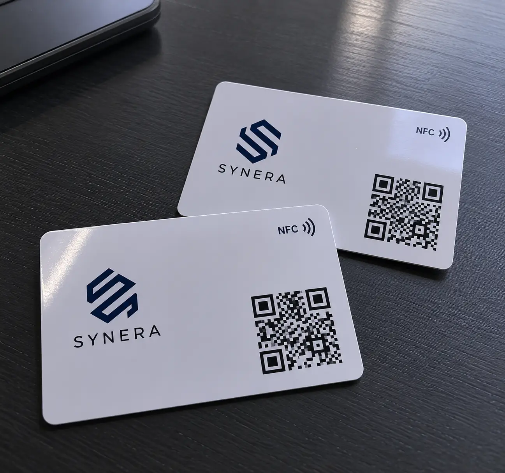
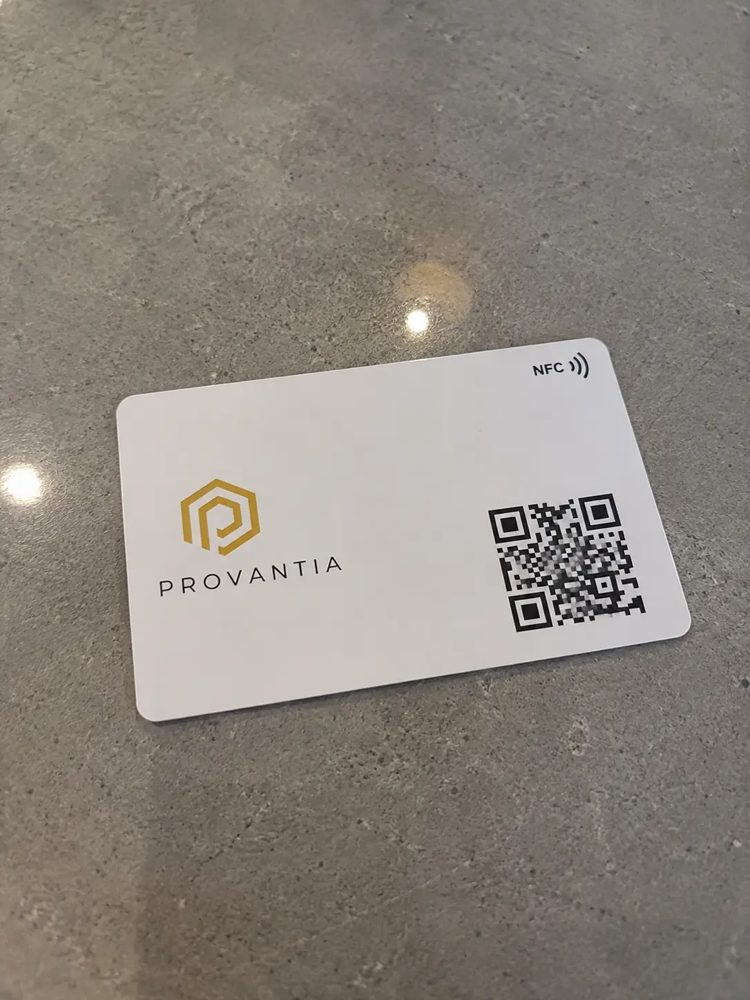
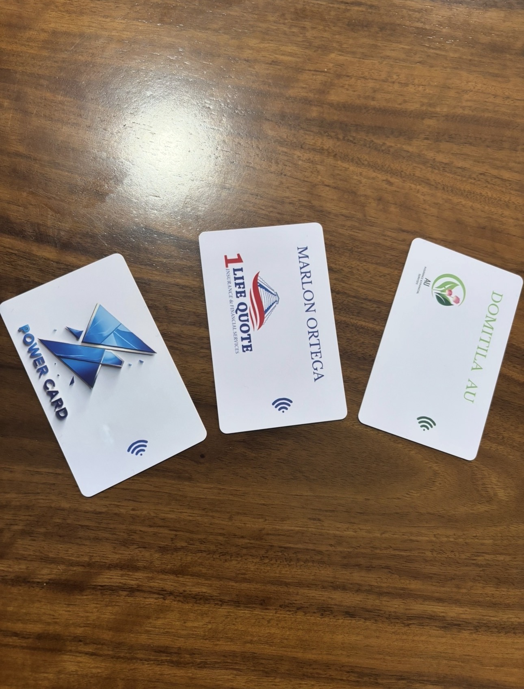
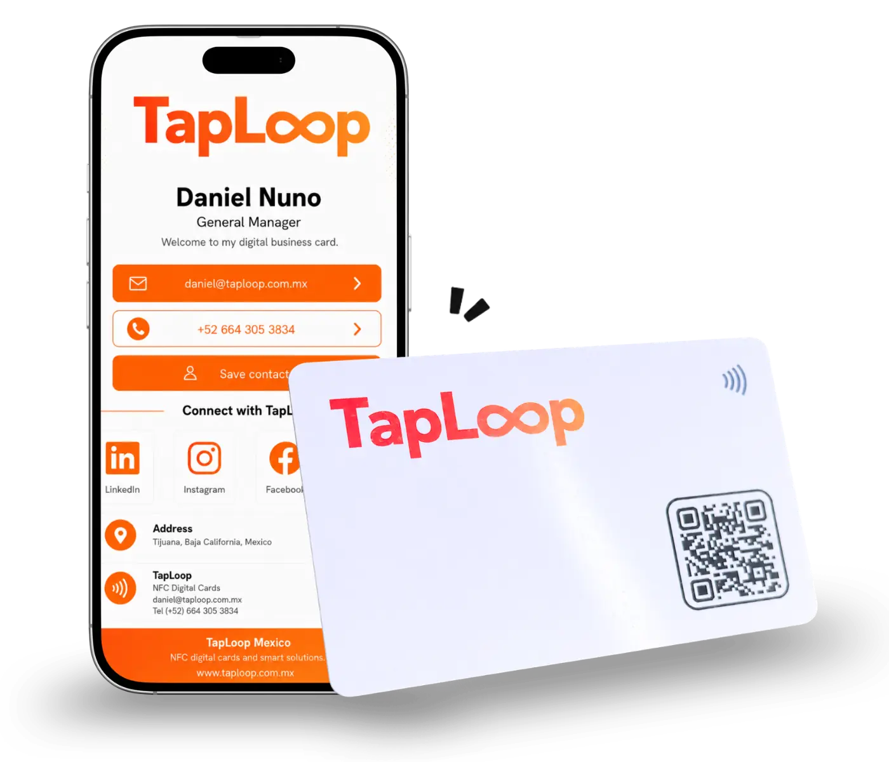

★★★★★“I work in real estate, and it worked from the very first week. I tap the card and the client instantly has my WhatsApp, location, and saved contact.”
Alejandra RuizReal Estate Advisor · GuadalajaraUse Cases
Each experience shows a different way to use the digital profile: sales follow-up, networking, customer service, portfolios, appointments, location, or catalogs.

★★★★★“I work in real estate, and it worked from the very first week. I tap the card and the client instantly has my WhatsApp, location, and saved contact.”
Alejandra RuizReal Estate Advisor · Guadalajara
★★★★★“We have used these cards with our sales team for more than two years. If a number changes, we edit the profile and it is done.”
Rodrigo BeltranSales Director · Monterrey
★★★★★“My patients open my location, Instagram, and appointment link without searching for anything. It looks much more professional.”
Fernanda SotoDermatologist · Mexico City
★★★★★“At every presentation, someone asks about the card. That moment helps people remember the brand.”
Ivan CastanedaCreative Agency · Monterrey
★★★★★“It saves me so much time at expos. With one tap, people have my portfolio and every way to contact me.”
Karen MedinaWedding Planner · Puebla
★★★★★“I like that it does not depend on an app. For my service, where trust matters, you can really see the difference.”
Luis HerreraTax Consultant · Queretaro
★★★★★“I use it at meetings and talent fairs. I share my profile, LinkedIn, and calendar without having to explain anything.”
Daniela PonceHeadhunter · Tijuana
★★★★★“Everything moves quickly in automotive sales. TapLoop lets me share my details, catalog, and WhatsApp instantly.”
Jorge SalinasAutomotive Sales · LeonBenefits Mentioned by Customers
TapLoop brings professional information together in a digital profile that opens through NFC or QR code.
Make it easy for customers and prospects to save your phone number, email, and professional details from their phone.
Start a conversation, send a proposal, or continue following up without searching for numbers or links.
Bring together social media, website, location, portfolio, catalog, and contact buttons in one place.
Frequently Asked Questions
Useful information before requesting a digital business card or a solution for your team.
It is a physical card with an NFC chip and QR code that opens a digital profile with contact details, WhatsApp, social media, website, and links.
No. The digital profile opens in the phone browser through NFC or QR code.
Yes. The card and profile can be customized with your logo, colors, name, role, QR code, and key links.
Yes. We can create a consistent visual system and one digital profile for each employee.

Ready to start?
Tell us how many cards you need, which card type you prefer, and what your digital profile should include.